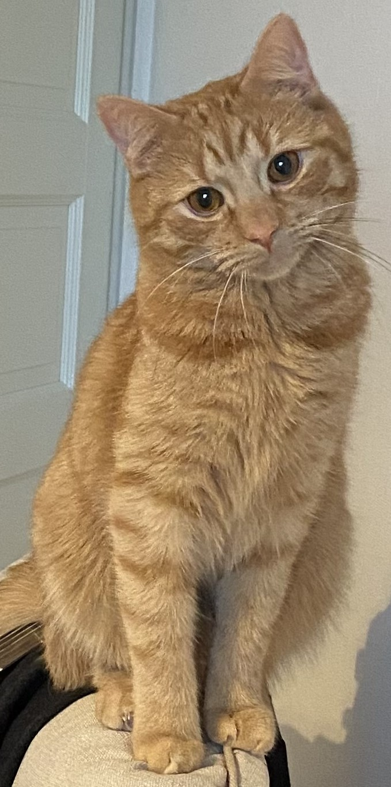

DITA "tuotemanuaali"
Kissan viihdyttämisen A ja O

Tämän lyhykäisen projektin taustalla oli halu kirjoittaa DITAlla tuotemanuaali – dokumentti, jonka sisältö painottuu concept- ja reference-moduuleihin. Tällä projektilla halusin havainnollistaa suomenkielisen kirjoittamisen kykyäni enkä niinkään dokumentin rakennetta tai sisältöä.
Ainoa ongelma ennen projektin aloittamista oli keksiä tuotemanuaalille teema. Halusin kirjoittaa jostain aiheesta, jonka tunnen hyvin. Siinä sitten ajattelin, että kissathan ovat ihan kivoja. Ja näin ”tuotteekseni” valikoitui kissa.
Kenties tuotteena epätavanomainen, myönnän, mutta nyt ei mutustella muotoseikkoja.
Jos haluat oppia viihdyttämään kissaasi, voit ladata PDF-muotoinen bookmapin seuraavasta linkistä:
Kissan viihdyttämisen A ja O (PDF).
Jos satut omistamaan .DITA-tiedostoja handlaavan ohjelman, voit ladata koko pakatun projektin seuraavasta linkistä:
Lataa pakatut tiedostot (cat_document.zip).